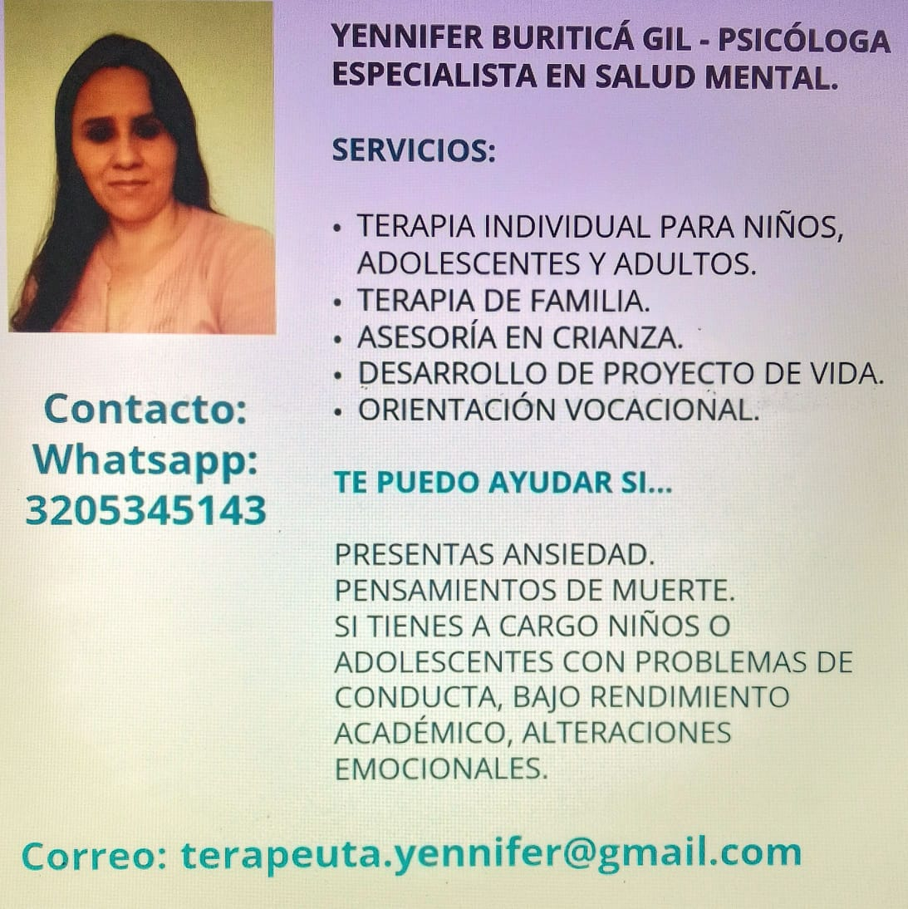

Atención individual
Terapia individual para niños, adolescentes y adultos.
Psicóloga especialista en salud mental
Atención psicológica con enfoque humano, ético y cercano para acompañar procesos emocionales, familiares y de crecimiento personal.

Terapia individual para niños, adolescentes y adultos.
Terapia de familia y asesoría en crianza para fortalecer la convivencia y el apoyo en casa.
Orientación vocacional y desarrollo de proyecto de vida.
Atención psicológica para niños, adolescentes y adultos.
Espacios para fortalecer la comunicación y el acompañamiento familiar.
Apoyo y herramientas para madres, padres y cuidadores.
Acompañamiento para metas personales, autoestima y propósito.
Apoyo para decisiones académicas y ocupacionales.
Atención en ansiedad y dificultades emocionales.
Soy Yennifer Buriticá Gil, psicóloga especialista en salud mental. Brindo acompañamiento psicológico con un enfoque humano, ético y cercano, orientado al bienestar emocional, el fortalecimiento familiar y el desarrollo personal.
Trabajo con un enfoque respetuoso y confidencial, brindando herramientas para afrontar ansiedad, alteraciones emocionales, bajo rendimiento académico, dificultades de conducta y procesos de orientación personal.
Modalidad: presencial y virtual
Horario: lunes a viernes de 8:00 a.m. a 6:00 p.m.
WhatsApp: 320 534 5143
Correo: terapeuta.yennifer@gmail.com
Contáctame por WhatsApp o correo para recibir orientación y programar tu atención.